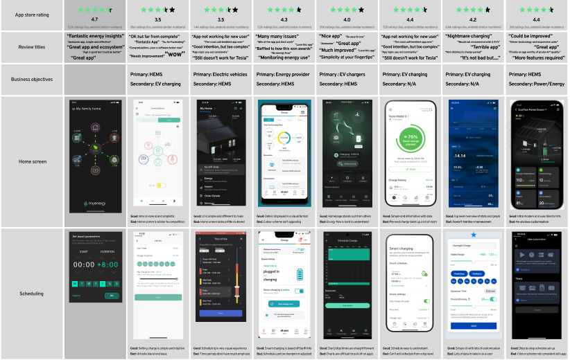
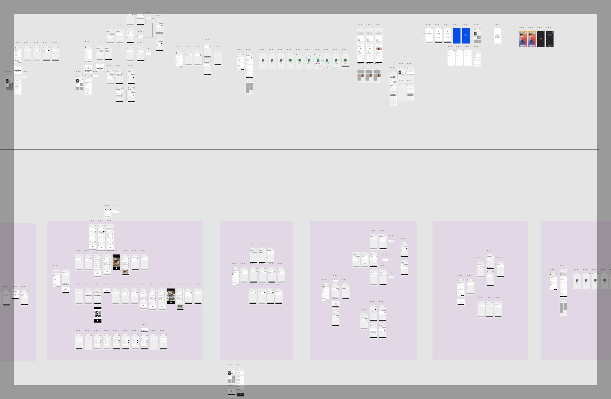

Away from the computer, I find joy in the simple pleasures of life. Living near the coast of South Devon with my wife and 2 girls, you'll often find me embracing the beach, with its soothing waves & sandy shores. Swimming in the refreshing sea and cycling the rolling hills are my preferred ways to unwind and stay invigorated. Life is a balance, and in these outdoor pursuits, I discover the perfect counterpoint to my digital endeavours, ensuring a well-rounded and fulfilling existence beyond the realm of code and design.
hello there,
I'm Stuart, a designer and frontend developer
Welcome to my portfolio! I specialise in creating seamless digital experiences through expert design and custom development, helping businesses bring their ideas to life with precision and innovation.
I have had the privilege of working across a wide range of industries, delivering tailored digital solutions that meet diverse business needs.
From small startups to large enterprises, I’ve helped clients develop websites, apps, and software that are both functional and user-friendly.
My work spans sectors including e-commerce, consumer products, education, and green energy, adapting to each industry’s unique requirements.
Whether it’s a simple landing page or a complex, multi-functional platform, I approach every project with the same level of care and attention to detail.
At the core of my process is a user-focused design philosophy, ensuring that every solution is intuitive, accessible, and built to drive meaningful engagement and results.
Designer
I love simple and intuitive design and solving complex problems with simple design solutions.
I can help you with:
UX/UI, Web, App
Design Tools:
- Figma
- Adobe Creative Suite
- Affinity Designer & Photo
- Miro
- some pen & paper
Frontend Developer
Whether a fresh website or app, delivering updates & new features, or the process of QA & bug hunting.
Languages:
Swift, SwiftUI, SwiftTesting, JavaScript, React, React Native, HTML, CSS
Dev Tools:
- XCode
- VS Code
- TestFlight & Firebase
- GitHub & Git
- Cocoapods
- Bitbucket
- Hummingbird
Product Manager
I've led projects from concept to launch, some big, some small, and learnt a few things on the way.
I've experience in:
Multi-platform Digital Ecosystems, Websites, Apps & Online Stores
PM Tools:
- 20+ Years Experience
- Agile (inc. SAFe)
- Scrum Framework
- JIRA
- Confluence
- Office365
My Latest Projects
Here are a few past projects I've worked on.
Due to non-disclosure agreements, I'm unable to showcase all my projects but if you'd like to hear more about my experience drop me a message
Dyson Purifiers & App
Delivering both physical and digital products to market, bringing simple, intuitive interactions
across all touch points for the products.
design
code
manage

South Devon Welding
Website design and launch to support small business growth in line with customer specifications and branding.
design
code
manage

myenergi App & Web Portal
Delivering new features and products throughout the myenergi digital ecosystem across web and
app.
design
code
manage
Freelancing & Contracting Services: UX | Dev | PM
I provide expert solutions tailored to your project’s needs, delivered with precision and efficiency.
I’m happy to work to flexible fixed-term or ongoing contracts, ensuring the right fit for your business.
A well-defined design process is essential to delivering high-quality, user-centric digital solutions. From the outset, I focus on understanding your goals, the target audience, and the problem we're solving. Through user research, wireframing, prototyping, and testing, I ensure each decision is backed by insight and every design element is purpose-driven. I’m also experienced in working within teams and adapting to the established processes and methods of different companies, ensuring smooth collaboration and alignment with internal workflows. Whether starting from scratch or joining an ongoing project, I pride myself on hitting the ground running and adding value from day one. This structured approach helps streamline development, reduce risks, and create an end product that not only meets but exceeds expectations. Ultimately, a solid design process leads to intuitive, effective solutions that drive real business results and long-term user satisfaction.
Explore My Design Process
Every successful project begins with a clear understanding of the problem at hand and the scope within which it must be solved.
This first step is all about framing the project correctly, ensuring that all stakeholders are aligned, and establishing a foundation that will guide the rest of the design process.
At this stage, I collaborate closely with clients, stakeholders, and internal teams to gather as much context and information as possible.
Through in-depth discussions, surveys, and review of any existing documentation, I identify the core objectives, constraints, and pain points that the project aims to address.
Defining the scope is crucial because it outlines the parameters of the project—what is within scope and what is not—ensuring that resources are allocated effectively.
This clarity minimises scope creep and helps manage expectations throughout the project's lifecycle.
A well-delineated scope will also inform decisions on functionality, user flows, and technical requirements.
By diving deep into the business goals and the context surrounding the project, I establish a clear roadmap for the next phases.
This understanding also allows me to highlight any potential risks early on, from technical challenges to user adoption hurdles, so we can address them proactively.
Additionally, setting out clear success metrics early on helps everyone involved measure progress and know when the project is truly complete.
Whether it’s a target conversion rate, user retention goal, or market share increase, these key performance indicators (KPIs) give us a solid foundation for decision-making throughout the design and development process.
In sum, a well-defined problem and scope ensure that all subsequent efforts stay focused, purposeful, and aligned with business goals, creating a strong foundation for the work to come.
With a clear understanding of the problem and scope in place, the next step in the process is to build empathy for the end users. The goal here is to dive deep into understanding who the users are, what they need, what their pain points are, and how they currently interact with similar products or services. This phase is rooted in the principles of user-centreed design, where the aim is to uncover insights that will drive the direction of the solution.

User research is the cornerstone of this phase. This can take many forms: interviews, surveys, competitor analysis, user testing, analytics reviews, and field observations.
By gathering qualitative and quantitative data, I aim to create a comprehensive picture of the users, their behaviours, motivations, and frustrations.
This is not just about gathering information, but interpreting it in a way that reveals underlying needs that may not be immediately obvious.
The research phase also involves identifying and understanding market trends, emerging technologies, and competitive landscapes to ensure that the design solutions are not only user-friendly but also innovative and relevant.
With the insights gathered from research, the next step is to explore a range of possibilities and directions for the design.
This involves brainstorming, sketching, and developing initial concepts that might address the user needs identified in the previous phase.
I often use tools like user personas, journey maps, and empathy maps to organise these insights and provide a visual guide to the users' experiences, helping to align the team and stakeholders around the user’s core needs.
Empathy and research provide a solid foundation that allows the design to be both user-driven and contextually relevant.
It ensures that the resulting solutions aren’t just based on assumptions but are backed by real-world data and insights.
By staying close to the user’s needs and environment, the design process moves from abstract to tangible, with clear targets and well-informed decisions at every stage.
Once I’ve gathered insights and explored different avenues, the next step is to embrace divergent thinking. This phase is about generating as many ideas and potential solutions as possible—without immediately worrying about their feasibility or limitations. The goal is to break free from conventional thinking and push creative boundaries to uncover innovative solutions that could address the user needs and project goals in new ways.
 During divergent thinking, I use brainstorming techniques, mind mapping, and design sprints to quickly generate multiple ideas.
This is a time for pushing the envelope and exploring the edges of what might be possible within the context of the project.
At this stage, no idea is too wild, and no suggestion is dismissed too quickly. Every potential solution is considered, from small tweaks to existing ideas to entirely new, bold concepts that could transform the user experience.
During divergent thinking, I use brainstorming techniques, mind mapping, and design sprints to quickly generate multiple ideas.
This is a time for pushing the envelope and exploring the edges of what might be possible within the context of the project.
At this stage, no idea is too wild, and no suggestion is dismissed too quickly. Every potential solution is considered, from small tweaks to existing ideas to entirely new, bold concepts that could transform the user experience.
Divergence in design encourages creativity and allows for diverse perspectives.
It’s a way to challenge assumptions and broaden the design space, ensuring that we don’t settle for the first or most obvious idea that comes to mind.
By looking at the problem from different angles and considering a wide range of solutions, we increase the likelihood of finding the most effective and innovative design approach.
This open-minded approach helps uncover unexpected solutions and makes the design process more dynamic and iterative.
While divergent thinking encourages freedom and creativity, it’s important to recognise that the ideas generated during this phase will eventually need to be refined and narrowed down.
Divergence is only one part of the design process; after this phase, we enter the process of convergence, where we’ll take the best ideas and explore them in greater depth.
Once we have a wide array of ideas from the divergent thinking phase, it’s time to begin narrowing down those ideas and testing their viability. This is where the concept starts to take shape in tangible form. Prototyping is a key part of the process, and I use this phase to translate abstract concepts into working models, whether they are low-fidelity wireframes or high-fidelity interactive prototypes.
 Prototypes allow us to visualise how the design will function, enabling us to explore interactions, flows, and user journeys in a way that static designs can’t.
During this phase, I focus on creating something simple but interactive enough to demonstrate core functionality, whether it’s a clickable wireframe or an interactive mockup.
Prototypes make it easier to identify usability issues early on and allow for quick iteration based on user feedback.
Prototypes allow us to visualise how the design will function, enabling us to explore interactions, flows, and user journeys in a way that static designs can’t.
During this phase, I focus on creating something simple but interactive enough to demonstrate core functionality, whether it’s a clickable wireframe or an interactive mockup.
Prototypes make it easier to identify usability issues early on and allow for quick iteration based on user feedback.
Refinement is the natural next step after prototyping. This is where the design is iterated upon, optimised, and aligned more closely with user needs and project requirements.
Based on feedback from usability tests, user sessions, and team reviews, I refine the design by improving visual elements, interaction patterns, and flow.
This is a collaborative process where both design and development teams may offer input on technical feasibility and user interaction, ensuring that the solution not only looks good but works well.
Testing plays a critical role in this phase. Whether it’s A/B testing, user testing, or accessibility audits, I ensure that the design is evaluated from all angles before moving on to the development stage.
This includes testing with real users to uncover pain points, gauge user satisfaction, and ensure that the design is intuitive and functional.
Testing helps mitigate risks by allowing us to identify flaws early and make necessary adjustments before the product goes live.
After refining and testing prototypes, the next stage in the process is moving into development, where the design begins to come to life in code. At this point, I work in close collaboration with the design and development teams to turn wireframes and mockups into functional, interactive experiences. My experience as both a designer and frontend developer allows me to bridge the gap between design and development, ensuring that the final product is both visually appealing and technically robust.

In this phase, I work alongside developers to ensure that the design is faithfully translated into code while maintaining a high standard of usability, performance, and accessibility.
I help write clean, efficient code, and ensure that it adheres to the best practices for front-end development. Whether it's building responsive layouts, implementing animations, or integrating with backend services,
the development phase is where the user interface and interactions take shape.
But even as development progresses, testing doesn’t stop. In fact, this phase involves more intensive testing, as we ensure the product works across different devices, browsers, and screen sizes.
I conduct thorough quality assurance (QA) testing, where I focus on usability, functionality, and performance.
User testing is also crucial here to confirm that the end product performs as expected in real-world conditions.
Feedback loops continue with stakeholders to ensure the solution meets business goals and user needs.
In parallel with development, I ensure that the project undergoes rigorous accessibility testing, ensuring that the product is usable by people with various disabilities.
Testing, optimisation, and collaboration during this stage make sure the product is not only functional but also polished and ready for release.
A solid design process isn’t linear; it’s a dynamic, iterative journey. By deeply understanding the problem, empathising with users, exploring ideas, prototyping and testing rigorously,
and working closely with development, we can create a product that truly resonates with users and achieves business goals.
This process is a blend of research, creativity, testing, and collaboration—where every phase builds on the last, ensuring that the final result is a thoughtful, effective, and user-centric solution.
At the heart of this process is a commitment to understanding and solving real user problems. Whether I’m working with a brand-new concept or refining an existing product,
I strive for design solutions that are not only aesthetically pleasing but are also functional, efficient, and intuitive.
Ultimately, a great design process brings together the best of strategy, creativity, and technology to create solutions that drive tangible, lasting results.
I'd love to walk you through the journey one of my projects...why not email me.
End-to-End Project Development: From Concept to Delivery
Transforming your ideas into fully realised digital experiences, with expert design and custom development every step of the way.
I specialise in end-to-end project development, offering a comprehensive service that takes your ideas from initial concept through to final delivery. By combining expert design with bespoke software development, I ensure that every project is not only visually engaging but also highly functional and user-centric. Whether you’re looking to build a website or a mobile app, I manage the entire process, including user research, wireframing, prototyping, development, and final launch. With a focus on precision and quality at every stage, I work closely with you to bring your vision to life, ensuring a seamless and successful outcome.
Plan
Ideas & Design
Whether you're starting from a blank canvas or an existing site to refresh, we'll create a visually appealing and user-friendly digital product tailored to your business needs.
Build
Create and Code
Let me take care of the technical side of things, with clean code with seamless functionality, ensuring optimal performance, user experience and scaleability.
Launch
Test & Go Live
I'll conduct rigorous testing to iron out any issues, culminating in a seamless go-live experience so you can focus on sharing your exciting new product!
Frequently Asked Questions
The cost of building a website depends on various factors such as complexity, features, design, and ongoing maintenance. I provide transparent pricing estimates upfront, tailored to your specific requirements and budget constraints.
But that doesn’t really answer the question, right?! So, let’s use a simple 3-page site with no online store or crazy add-ons as an example:
- Bespoke designed site, fully computer & mobile friendly – approx. £500.
- Domain, Hosting, SSL Certificate – approx. £150 annually.
Obviously bigger, more complex and high traffic sites will cost more, so get in touch to discuss your project and receive a personalised quote.
Similar to the cost of building a site, the timeline depends on a number of factors but laying out a clear plan of deliverables and ensuring both of us understand the workflow helps manage expectations and ensures an efficient delivery.
To use a simple 3-page site as an example, it would typically be week once all content (text and images etc) are provided.
Obviously bigger, more complex projects will take longer but getting a minimum viable product live asap would be key before iterating and adding features and content as required.
In a word, yes! I can recommend reliable hosting providers based on your needs and budget. We'll assist you in setting up your hosting account and ensure your website is properly configured for optimal performance and security.
Or for a small annual fee I can setup both domain and hosting and continually manage all of the above, as well as the renewals on your behalf. I can also work with any existing domain & hosting services you have.
My client-centric approach involves collaborating closely with yourself throughout the entire project lifecycle.
This includes:
- Initial consultation to discuss project requirements, goals, and timeline as well as any follow-on research that may be required.
- Regular communication and updates to ensure transparency and alignment.
- Iterative design and development phases with opportunities for feedback and revisions.
- Thorough testing and quality assurance to deliver a polished final product.
- Follow-up support and maintenance to address any initial post-launch needs or issues.
It’s often hard to know exactly what you want until you see what you’ve got, and so amendments and revisions are an inevitable part of the development process.
I usually allow for a couple rounds of revisions as part of a project, and after that can work with you to see if we need to expand the scope of the project.
Yes, I offer ongoing support and maintenance services to ensure that your website remains up-to-date, secure, and optimised for performance. Whether it's fixing bugs, updating content, or implementing new features, I'm here to support your website's long-term success.
Typically, I provide up to 2hrs of support a month (anything over that will be charged at an hourly rate) for the following rates:
- less than 4k visits - £15 per month (or £150 for annual payment) *
- 4k to 10K visits - £30 per month (or £300 for annual payment) *
- over 10K visits - £100 per month (or £1000 for annual payment) *
*The majority of the cost goes to covering the cost of hosting the site, not sure how much traffic you’ll get? Don’t worry, as part of our initial discussions, I can estimate based on competitors and similar sites.
Yes, I can incorporate a content management system (CMS) into your website, allowing you to easily update and manage your content without needing technical expertise.
One such popular CMS options is WordPress, but I can work with others if you’d prefer. I’ll provide training and some support to ensure you're comfortable managing your website going forward.
If you're considering an app for your business, I can guide you through the entire process, from initial planning to launch.
We'll start by discussing your goals, target audience, and the features you need. Whether you need a mobile app for iOS, Android, or both, I’ll ensure the design and functionality align with your business objectives.
I’ll handle all aspects of the project, including user research, wireframing, design, development, and testing. If the project requires additional expertise or resources, I can bring in trusted developers to ensure we meet your needs and deadlines. Throughout the process, I’ll keep you informed and involved, ensuring the final product exceeds your expectations. Plus, I’ll build your app with scalability in mind, so it can grow alongside your business, adapting to new features or increasing demand in the future.
Once the app is ready, I’ll assist with deployment and provide ongoing support as needed. Let’s work together to create an app that helps your business thrive now and in the future.
Still got some questions? Email me.
A little about me...
What others are saying...
"Working with Stuart was an absolute pleasure, he nailed the website build, flows great and looks the part. Good feedback from all! Thank you!"
Rob Taylor - South Devon Welding